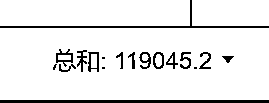
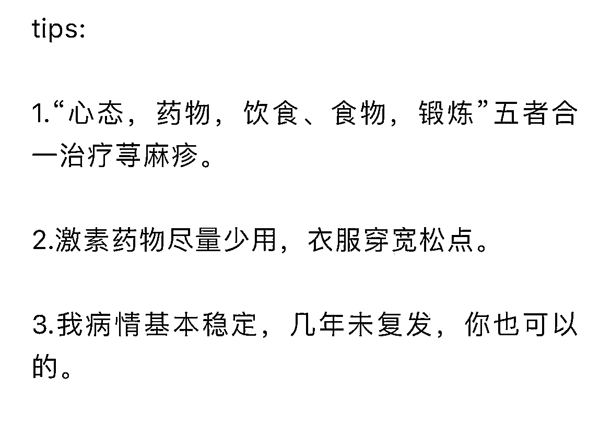
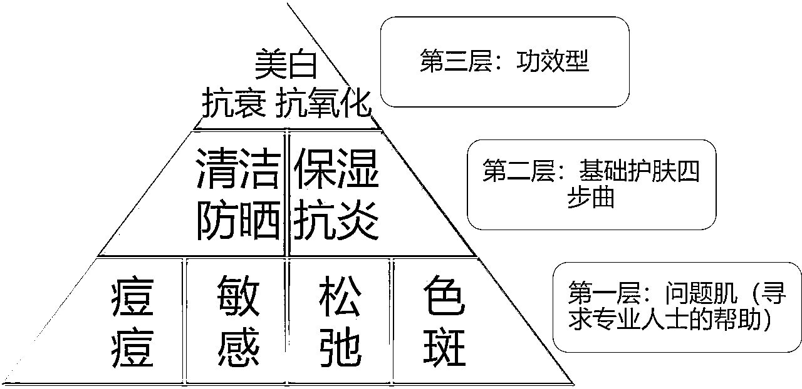

来源：https://ancab4z106.feishu.cn/docx/E1WGd70YLoaHGfxAYJTc4WoFnsd
我是夕子，93年女孩，白手起家，不到2万成本现在每月稳定10w+利润。白手起家，不靠家里，完成了在新一线城市安家落户，买房买车育儿。
对比很多大佬的成绩，这只是小儿科，但我只跟自己比，跟昨天的自己比，有没有更聪明些，认知有没有更宽阔些，有没有更沉稳些，有没有更接近我理想的生活，有没有更有钱------

（单品牌收入）
毕竟属于大学毕业后第一次做生意，没有亏，反而挣了，是条稳稳的现金流。我把相关的重要经验分享给有缘人，希望能给到大家一些启发。
分享目录如下：
一：我是个皮肤病患者，所以选择从医
一：毕业后，放弃不喜欢的工作
二：做生意，从一单2块开始
三：店铺被封，差点放弃
六：未来展望
一：我是个皮肤病患者，选择从医
我2008年7月份在家突发荨麻疹，严重的时候因为风团五官变型。早自习朗读的时候突然眼皮下沉，看不清东西，感觉眼睛快瞎了。哭着回家找爹妈的。
治疗期间，中医西医都试了，还是特别顽固，时不时会爆发，学生时代既傲慢又谨慎，小心翼翼偏多，不敢吃鱼、牛羊狗肉等等。
高中时期一到周末想尽办法回家泡药浴，加上强身健体，皮肤总算稳定下来，至少不会半夜瘙痒地睡不着。
出社会后我写了个关于荨麻疹治疗的总结，我把核心的点放在这个图片上，给有荨麻疹的朋友点点参考：

荨麻疹是其一，很有个不痛不痒，但荨麻疹的经历让我萌发了想学医，加上我们省只有一个211学校，我高考成绩能上一所211医学院算不错了。如果按照大部分人的发展轨迹就是进985甚至出国深造。
谁知道我没按照这样的轨迹发展。在三甲医院呆了段时间，写不完的病历，跑不完的腿。我最喜欢呆的科室——皮肤性病学，治疗特别局限，激素、维生素、抗生素轮番上。激光仪器两台，一个月开机不超过3次。
那时候我就会看些护肤科普文，自己尝试写，给丁香园投稿过几次，居然有次中了。获得人生第一笔稿费1000块。
说回跟改善问题性肌肤渊源，我大学的时候特爱美，有事没事就喜欢各种DIY，什么白醋洗脸，开塞露护肤，什么刮痧等等。现在想来真老土，这些DIY美肤方式成了“毁容”方式，我成了重度敏感肌，皮肤时不时发红发烫起疹子。
经常去校医院打点滴续命，有一年国庆，我朋友从武汉过来找我玩，结果当天皮肤爆发红疹子，又红又痒又紧绷，真的想把这层皮扯下来。那个国庆，我朋友成了陪诊人员，陪我打点滴。
皮肤敏感的经历，我开始注重科学护肤了，科学护肤不是单靠薄薄一本教科书就可以搞定的。需要理论跟实践结合在一起，后面我也构建了自己的护肤体系。这些体系也为自己后续的商业变现提供了很大帮助。
这个金字塔是目前常用的，皮肤有问题最快捷的方式就是找专业人士解决。皮肤没啥问题，做好温和清洁+适度保湿+加强抗氧化+随时防晒，健康靓丽皮肤就完成80%。

二：为什么从三甲医院辞职
因为我厌倦了办公室文化，也厌倦了把大部分时间花在书写病例上，这个在个人技能上面进步很慢
还有我这个人眼泪很不听话，领导训斥几句就会哗啦啦地哭
不知道有没有跟我一样的姐妹，受不了气。
当然最主要的是我选的皮肤美容科，但是我们科室当时仪器、理念都比较落后
那些想真正改善皮肤的人得不到很好的帮助，后面就离开体制，之后还一路折腾过
美业互联网，私营的医美机构，大的小的都呆过
每个地方都有成长，互联网思维，门诊运营，以及一线接触大批量的求美者
知道目前主流的那些项目，哪些有用，哪些没有用。
正在触发我自己创业的是一个印象深刻的求美者，脸上有黄褐斑，折腾了五年了，一点好转都没有
来到我上班的医美医院，你们有在私立上班应该体会过，第一关接触求美者的不是医院，是咨询师
咨询师销售厉害，专业一般这个咨询师给那位姐姐开了一个大疗程光电项目以及水光
但是她皮肤这么严重了，根本不适合光电，而作为医生在私立大型机构没有发言权的
那时候我会写一些科普文，一个月也有个5000块钱收入
想着先不干了，休息一段时间，我用自己所知道的，关于黄褐斑内调外养的方式去帮助一些需要的朋友
你可以理解这也是一门技术，手握技术就不怕了，痘痘、敏感这些更没问题，后面刚好遇到疫情
为了交社保，就自己注册了个公司，结果到现在
辞职的原因还涉及到当时的领导言而无信，加上他的治疗方案以及言行不是我所推崇的。索性就不干了，在不干之前，有个小插曲，就是一盒面膜挣2块的事情。
三：从一单挣2块钱开始
2019年11月，当时已经提了离职。那时大家做了一次团购，群里龙也接了，但是负责货源的同事离职了，这个事情没有人对接。
都是一些常见的医美面膜，我试着在平台联系了一个店家，不敢微信跟她交易，毕竟也有大几千需要我先垫付。（小插曲，这个店主后面也跟我做别的品牌了，比原来卖医美产品轻松很多。）
找到货源后，跟同事们报价，大家接受，之后等货到，她们再付钱给我。每单挣2块，当时我也很兴奋，钱不多，却是个机会。
后面我在朋友圈发广告，有两三个朋友下单，也是一单挣几块钱，挣个吆喝。离离职越来越近，我也没去找下家，整个状态就是不想再打工了，想自己做点事情。
想着离职后先要搞定社保问题，找了代办公司注册公司，方便自己交社保，这公司不知不觉也有4个年头了。
疫情影响，加上资本不多，我也不敢开实体店，从有结果的出发，做线上美业，简单来说，就是你有皮肤问题，微信上找到我，我给你诊断，搭配医用产品，你给我钱，就这么简单。
一单挣几块钱的生意，肯定不能养活我自己，现有的货源太普遍，市场乱价严重。
我需要一个更有针对性，也更有利润的产品。我就去查，找到了一个主打祛痘的品牌。
这个品牌线上线下都有，线下渠道主要是医院、药店，背书层面是很有优势的，加上我用过效果确实好，当时对我来说是个很好的选择。
果断花了1万6入了一批货，这个级别属于合伙人级别，折扣比较低，有利润空间。
有了靠谱产品，接下来就是怎么卖、卖给谁的问题。
朋友圈人数有限，就去知乎写问答引流，一天引来5个左右咨询，一半的转换率，单品到组合，客单价从最开始的300多，提到600。
四：店铺被封，差点放弃
随着咨询越来越多，也带来一个问题，有些新顾客习惯平台交易。
想着提高成交率，交了5000保证金开了c店，我对象帮我拍摄产品照片，还帮我剪辑视频，害，堂堂一个搞科研的人被沦落为我的打工仔。
这些努力付出并没有感动谁，上了几款械字号产品，店铺直接被封，积累了几十个好评，瞬间清空。
挺受挫的，这些都是极有利于新诊成交的数据。加上当时遇到瓶颈期了，我的时间放在写文章引流、客服上面就占据了一天时间，晚上十二点都还在回复消息。
关键一个月的利润只在1-2万左右，离我的目标十万八千里。
想过放弃，毕竟我去上班一个月也有这个工资，但又不服气，都走出来了，再给自己一次机会，我要寻找出路，我要提高自己的商业认知。
品牌方年会我是受邀人员，认识了很多优秀的同行，直到现在还跟一些同行有合作。
我发现很多并不是医学专业出身的，都能把这份事业做得风生水起，从客户这端来看，她们更多想安全有效解决现有问题。
所以选品很关键，产品好省了一半的心，后续回购率也高。
四：从一个月1万利润到5万的跃升，主要做了这件事
2020年初疫情爆发，封在老家半个月，焦虑+皮肤变差，迫不及待想回广州重整旗鼓。
在知乎无意刷到了一个老师的视频，她的一些商业思维是我这个小白欠缺的，翻看了她的几篇文章。加上联系方式，直接转钱。
聊了一个小时的语音，梳理了我现在的卡点，建议我先扩大流量端。我以前随意发了几篇小红书，很多是自嗨类型的，她看了几眼，说这是啥呀。现在再来看自己的作品，我也想说，这是啥呀！
我仔细地上了这个老师的录播课，在家录了个实操刷酸的视频，火了，意料之中，也是意料之外。
小红书从千粉直接到万粉，咨询也是越来越多。同时广告主也找来了，也就是我的收入是双向的，to c端零售护肤品有，to b端广告收入，以及代理商进货。
说实在，做自媒体看课是一回事，主要还是动起来。我现在也有一套自己做内容的sop。
1.定位 （科学护肤）
2.选题（每天收集1-3个爆款分析）现在有个素材库
3.统一写3-5个脚本，统一录制⏺视频3-5个
4.定期发布
因为我经历过这个阶段，我知道现在自媒体竞争越来越大了，个人重新走一遍以上我说的步骤很费时间和精力，可能学了半年一年自己账号还没建立起来，更不要说其他的。
所以我现在给到合作伙伴，直接是现成的脚本（在标红的地方改为自己的人设信息即可），给到录制视频的sop，以及提供3条视频的剪辑。你拿来就可以直接发布，相当于公域账号直接有了。
这个阶段还是自己单干的，一条龙服务自己做。说实在很重，也比较辛苦。
我的商业顿悟会比较慢，想法也比较多，幸运的是一直在优化现有的事业，也能碰到优秀的老师。
做内容有个很重要的点，一定不要自嗨。先从模仿开始。做好定位，之后模仿，再优化。（最近会起一个小红书招商号，也会记录自己起号过程。）
（部分蒲公英收入，还有些是合集走线下打款）
2024年一年都没有广告，不是没有广告找，是不感兴趣。自身业务就够吃了，当然有个现状是品牌投广告的越来越少，很多是直接投到直播间了，要产出。所以你会看到很多护肤博主，美妆博主停更了。
因为原来依赖的单一广告收入渠道下滑，甚至没了，不得不停更。为爱发电的少，人人都要吃饭，长期也亏不起。
这里也提醒各位美妆护肤博主，变现渠道不要太单一了，不能完全依赖于接广告。得有个基本盘，比如有家淘宝店铺，有家实体店，或者有项项目。
月入5万啥感觉？一开始确实比较兴奋，安排旅游、私厨吃饭不带眨眼的。当然距离月入10w+还有距离，继续再接再厉。
不断付费学习,付费最有价值的两个星球，一个是生财星球，一个是玩赚星球。
除了付费星球，还付费了私域老师，私域老师有句话点醒了我：“端着金饭碗在讨饭。”啥意思呢？当时我兼着一个社群团购业务，就是吃喝拉撒的这些，我私域的用户更多奔着我专业，看皮肤来的，我居然做这种事情，真的在讨饭。
私域的用户需要花费时间和精力去交流，这种需要技术的事情，就应该收高客单。
六：从一个月5万利润到10万的跨越，做了这件事
流量端解决了，想进一步提高利润就是从后端产品入手。一个私域老师3000粉变现300万，这个跟她后端变现产品有很大的关系。
跟私域老师语音沟通了一个半小时，我列举现状，指出目标，一起想突破点。核心点就是深挖用户需求，在朋友圈优化上面，也做了人设标签和剧本，多角度展现自己，提高顾客信任度。
梳理了现有咨询中的sop表格，目前也不断在完善，有了这个表格，我回复客户信息也比较快。当然目前这一套我都复制给了我的联创合伙人，她们的客单价、成交率、利润率都上来了。不是苦哈哈地一单挣2块的状态。
沿着这个点，加入了一个新的私域护肤品牌，后端有6600，19800的产品支撑。
在加入新品牌之前我是有点扭扭捏捏的，我知道产品不错，不仅产品齐全，还有口服的，但我不想走微商路线，还记得我前面说的1万6的那个品牌吗？
它不是纯微商路线，天猫店、线下医院和药店都有，渠道比较多，价格也比较乱。
除了乱价的担心点外，还有是因为我没带起过团队，我就是扑哧扑哧地干零售。
还有一些顾客听到微商就摇头，更不要说代理这样的字眼。
后面打破心魔的是因为我说服自己，不把代理常挂嘴边，代理就是会员，会员就是代理。
哈，换个词，顾客听着也舒服，我也舒服。针对想搞事业的会员，发的圈也会不一样（会用标签标注）。
这里美业选品几点分享下：
1.深挖用户需求，最好涵盖面齐全
比如说不仅祛痘、还有美白、抗衰等等
2.口服保养是趋势，一个人一单接受了某个品牌的口服，不会轻易更换牌子的
3.尽量能跟医院合作的产品，品牌背书这块强
至此，一个零生意基础，2万成本起家，干到了年利润过百万，先给自己一个点赞，有运气有努力，实现在新一线城市买房安家，现在工作微信有3个了。
七：未来展望
2023年萌发了自己做品牌，边干活的时候边考察供应链，考察工厂，不断打样。终于在2024年3月份我们自己品牌出炉了，有了以前的积累，我们品牌侧重功效，对合伙伙伴不断赋能，有专业，有引流，有营销，一条龙服务。
也结合了市面上一些品牌的优势，组成了现在有的模式。我们也走社交电商模式，在品上从家居水光切入，不破皮不敷麻，工厂靠谱，创始人靠谱，产品靠谱，效果靠谱，不管是有实体店的店主还是一般店主很好推，有个孕妈店主，加入联创不到一个礼拜就成功卖出去家居水光了。
还有个点，家居水光大牌没有出呀，这是我们的机会点。最重要的机会点是问题性肌肤赛道缺专业的人，缺专业的产品，缺专业的搭配。
有些姐妹店里已经有些产品是可以针对问题性肌肤的，现在需要做的就是把专业搞好，每天不断有新诊进来。专业——流量——成交——深挖需求——复购，不断做好这个闭环。
不管自用还是卖，都是很好的产品，有利润空间，有大厂背书，有创始人背书等等。
当然我们现在做的加盟模式，对比市面上的，我们的优势在于：
1.产品端：医生、985生物医学博士创立的品牌，更具有专业性以及说服力。
2.流量端：直接给加盟商脚本，教拍摄，剪辑3条视频，你一键发布就好啦！相当于有了一个账号了，后续要做的就是重复重复再重复。（脚本、案例共享。）
3.问题性肌肤专业看脸端：价值6980的课程赠送，有小群服务，不会看的皮肤发群里，品牌方会告知你是什么，怎么搭配，相当于喂饭教程。
4.私域端：基础的朋友圈搭建，聊天sop都会给到，也会辅助群发售。
等等。共建美业呀！
未来的路很长，我们一起走。
2025.6.3更新下，去年9月份独资开了第一家皮肤管理店，3个月不到就回本了，投入资金不到10万（抛开产品研发成本），今年3月份第二家店投入运营，第二个月扣除房租 员工工资小盈利。
因为有实体店经验，更懂美业老板的困难点和需求。
做个小总结：
1.做生意从自己身边资源入手，从挣1块钱开始，选一个天花板比较高的，持续3——5年。
2.跑通自己的生意环节，最小mvp（产品——流量—销售——交付）
2.深挖用户价值，提高客单价
3.赚钱，向有结果的人学习，复制再创新
4.不管打工也好，创业也好，身体健康是第一，我有段时间就沉迷于搞钱，眼睛快瞎了。
现在的生活名言是——幸福生活是目的，其他都是手段。
我知道很多姐妹想从事美业这块，准备了几十万准备直接砸向市场了，选址、装修、加盟、员工等等开支就占了大半，折腾了半天发现都给房东、员工打工了。美业诚然是好事业，有一些坑，咱们没有必要踩。
下期内容，咱们来聊聊。
加微信：1058668249 （备注星球，送美业IP包，皮肤完美指南）